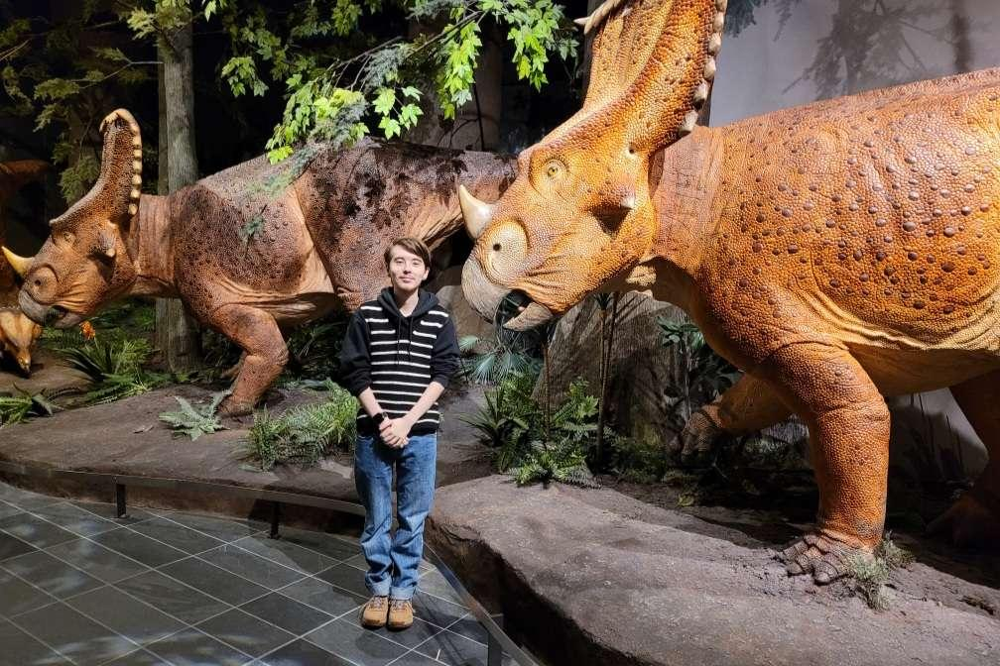
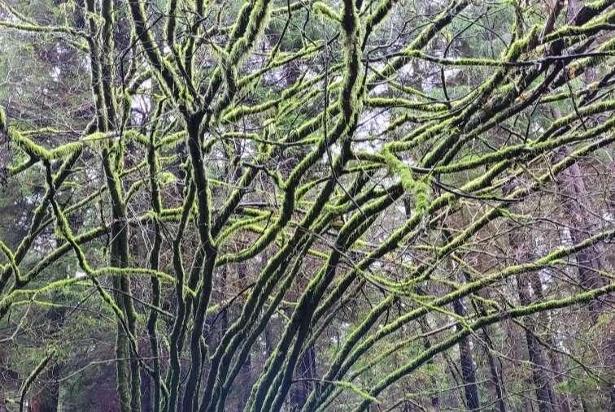

About me!

I'm an 18 year old artist born in Sudbury, Ontario. I grew up in nature and that reflects in my artwork. I'm currently a student at Algonquin College in the Library and Information Technician program. I've always loved making artwork, and took 4 art classes throughout highschool aswell as joining my schools theater troup Draveurs for 2 years in a row!
Artistic process

I create my artwork with an Ipad and the software Procreate. I get my inspiration for my art from nature. I aim to create stylized peices of art with lot's of textures and colour. My artwork is loosly based off reference images from my own photography or from photography I find online. Apart from drawing nature scenes, I also draw art of animals.